Required reading:
Chapter 2 Moore and Reynolds
Crystal Chemistry
Let's start by considering the average chemistry of the crust (in other words... if we consider the elements we are most likely to encounter, then we can consider the most likely clay mineral constituents). Click on each column heading below to learn more about each property.
|
element |
weight % | ionic radius Å | ||
|
O |
46 |
63 |
1.40 |
94 |
|
Si |
28 |
21 |
0.42 |
<1 |
|
Al |
8 |
7 |
0.51 |
<1 |
|
Fe |
5 |
2 |
0.74 |
<1 |
|
Ca |
4 |
2 |
0.99 |
1 |
|
Na |
3 |
3 |
0.97 |
1 |
|
K |
3 |
1 |
1.33 |
2 |
|
Mg |
2 |
2 |
0.66 |
<1 |
|
Total |
99 |
100 |
|
100 |
From this table it is easy to conclude that silicates are the most commonly occurring minerals, of which clay minerals are a subset.
Atom structure and mineral properties are intimately related. Mineral properties are function of:
(This is only intended to highlight concepts that you should already be familiar with and should have been covered in 100-level chemistry)
Quantum chemistry - theory that views the atoms are composed of particles, with each part containing discrete amounts of energy. The electrons, represent the outer "reactive" portion of an atom and are viewed probabilistically, existing with specific "orbitals"
Probability vs. distance
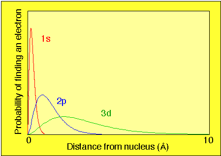
Electrons can be viewed as clouds with a probability of occupying a region within the cloud. Major energy gaps occur between them.
Each electron orbital in an atom is assigned a set of principle quantum numbers. (n)
Non-spherically shaped orbital have strong directionality, which is important for bonding
Elements of the periodic table.
Arranged in increasing atomic weight. All weights are given relative to 12C which is taken to be exactly 12.000
Characteristics are dependent upon the electronic structure of the atoms. Therefore, atoms are further arranged (into Groups) by chemical properties.
Group number relates the number of electrons in the outermost orbital.
Think of the periodic table as an ordering of elements based upon their chemical properties, that in part, depend upon the outermost (valence) electrons. These electrons become available for chemical bonding.
Because certain atoms have similar electron configurations, they
will occupy similar crystallographic sites.
Between any pair of oppositely charged ions there is an
attractive force proportional to the products of their charges and
inversely proportional to the square of the distance between their
centers. (i.e., Coulomb's Law)
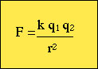
Where:
Example of determinig Cl- ionic radius in LiCl
Using LiCl, Assume anion-to-anion (Cl-Cl) contact. This is reasonable because Li+ is small (Z=3) and Cl- is large (Z= 17).
Given LiCl unit cell edge as a = 5.14Å
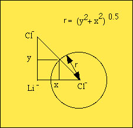
y = x = a/2 = 2.57Å
Therefore, the distance between Cl- centers is 3.63Å and the radius = 1.81Å.
Example for the case of structures containing bigger cations (Halite)
Given unit cell dimension of halite (a = 5.627Å) the distance between Na+ and Cl- can be estimated by simply subtracting the Cl- radius from the interatomic distance along the unit cell edge (i.e., a/2 = 2.813Å)
2.813Å - 1.81Å = 1.00Å
Actual radius of Na+ is 0.95Å. The sodium atom "rattles" around in the lattice.
Using the same logic for Sylvite (KCl) where a = 6.28Å
For K+ : r K+ + r Cl- = 1/2
(6.28Å) , r K+ = 1.33Å (fits just right).
Atomic radii are not necessarily constant from one crystal structure to another. The radius will vary with 1) type of bond, 2) nearing neighbors and the shape of the atoms (recall that atoms and ions are not rigid shapes).
The tendency for an ion to reshape (or redistribution of charge) due to external electric fields is termed polarization.
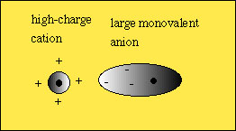
The more the electron density is localized between two ions the more "covalent" the bonding.
The forces that bind together atoms in a crystalline solid are electrical in nature.
Grouping of types of electrical forces or chemical bond in five descriptive types
Bonding type is determined by crystal structure (packing) and
atom types and ionization state. Physical properties are
intimately related to these factors. The table below shows the
relationship between valance state, inter-atomic distances,
hardness, and melting point.
|
Mineral |
cation-anion distance |
hardness |
Melting point |
Structure |
|
Halite - Na+, Cl- |
2.81 Å |
2.5 |
801° C |
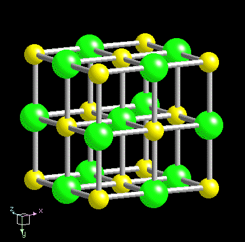 |
|
Sylvite - K+, Cl- |
3.15 Å |
2.0 |
776° C |
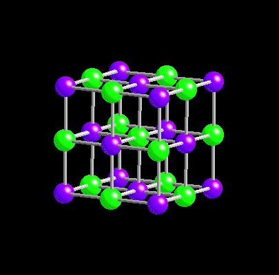 |
|
Fluorite - Ca2+, F- |
2.36 Å |
4.0 |
1360° C |
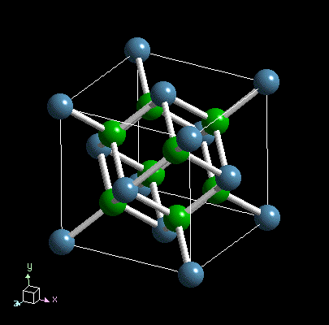 |
Specific bonds can share the character of more than one bond type.
More than one bond type can occur within a crystal structure.
Ionic Bond - Simple attractive force between two ions of opposite charge.
Examples - Halite Na+ and Cl-, Calcite Ca2+ and CO32-, Fluorite Ca2+ and F-.
Bond strength related to 1) the spacing between ions and 2) amount of charge.
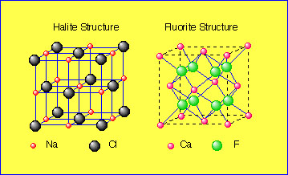
Covalent Bond - electron sharing bonds (for example one electron pulls double duty for two ions which have an unfilled orbital) - very stable
Certain atoms with large vacancies in the outer orbital (e.g., Si, C) will share electrons covalently with several neighboring atoms to form stable groups.
Example: Diamond C-C spacing is 1.54Å
The type of bonding that takes place between any two ions is in part related to the polarizability of the ion (i.e., distortion of the electric field).
Bonds between Groups Ia and IIVa (alkali-halides) and IIa and IVa (alkalide-earth oxides) tend to be ionic in character.
Atoms close to each other on the periodic table tend to be more covalently bonded.
Electronegativity an arbitrary scale devised by Linus Pauling to gauge an atom's ability to attract electrons. By looking at the difference between electronegativity units, one can estimate the amount of ionic versus covalent nature of the bonding between ions.
E.N. = (ionization energy + electron affinity) / Normalized
| Li | Be | B | C | N | O | F | ||||||||||
| 1.0 | 1.5 | 2.0 | 2.5 | 3.0 | 3.5 | 4.0 | ||||||||||
| Na | Mg | Al | Si | P | S | Cl | ||||||||||
| 0.9 | 1.2 | 1.5 | 1.8 | 2.1 | 2.5 | 3.0 | ||||||||||
| K | Ca | Sc | Ti | V | Cr | Mn | Fe | Co | Ni | Cu | Zn | Ga | Ge | As | Se | Br |
| 0.8 | 1.0 | 1.3 | 1.4 | 1.6 | 1.6 | 1.5 | 1.8 | 1.8 | 1.8 | 1.9 | 1.6 | 1.6 | 1.8 | 2.0 | 2.4 | 2.8 |
| Rb | Sr | Y | Zr | Nb | Mo | Tc | Ru | Rh | Pd | Ag | Cd | In | Sn | Sb | Te | I |
| 0.8 | 1.0 | 1.2 | 1.4 | 1.6 | 1.8 | 1.9 | 2.2 | 2.2 | 2.2 | 1.9 | 1.7 | 1.7 | 1.8 | 1.9 | 2.1 | 2.5 |
| Cs | Ba | La | Hf | Ta | W | Re | Os | Ir | Pt | Au | Hg | Tl | Pb | Bl | Po | At |
| 0.7 | 0.9 | 1.1 | 1.3 | 1.5 | 1.7 | 1.9 | 2.2 | 2.2 | 2.2 | 2.4 | 1.9 | 1.8 | 1.8 | 1.9 | 2.0 | 2.2 |
| Fr | Ra | Ac | Th | Pa | U | |||||||||||
| 0.7 | 0.9 | 1.1 | 1.3 | 1.5 | 1.7 | |||||||||||
Examples:
CO32- (22% ionic) PO43- (40% ionic) SiO44- (50% ionic)
(O - C) 3.5 - 2.5 = 1.0 (O - P) 3.5 - 2.1 = 1.4 (O - Si) 3.5 -
1.8 = 1.7
Ionic character = 1- exp(-1/4x) (form of the line fit to figure 4.35)
Also important is the nature of the neighboring atoms and bonds.
For example, an oxygen-potassium bond will be dependent upon what
atom the oxygen is bonded (e.g., SiO44-
versus AlO45-).
Metallic bonds - Bonding occurs through the free exchange
of electrons.
Properties owed to this effect include 1) conductivity, 2) low
hardness 3) Low melting point, 4) tenacity.
Van der Waals bond - In some cases, electrically neutral
compounds will have an asymmetric distribution of charge. One end
may be negative and the other positive (very common with organic
compounds). The structure is termed dipolar. The residual dipole
attraction between molecules is typically a very weak force and
only occurs when the molecules are in close proximity. Examples,
include the weak residual bonding in the layers of Graphite, Sulfur.
Hydrogen bond - Hydrogen has only one electron in its s-orbital
(which
it
loses quite easily). In some cases the presence of hydrogen will
allow two anions (seeking electrons) to share the lone hydrogen
electron. In the case of ice (recall it's a
mineral), the dipolarity of the H2O molecule results in
a tetrahedral network where a positive end bearing hydrogen will
"hydrogen" bond with the adjacent oxygen. Examples also seen in
some phyllosilicate structures.
Coordination Principles - As ions bond to each other, they gather or
cluster in a symmetrical arrangement. The convention is chosen
such that cations lie at the center of coordination scheme, with
anions residing as nearest neighbors. The number of anions that
form the symmetrical polyhedron around the cation is known as the
coordination number (C.N.)
The geometry of the first coordination shell (nearest neighbors) is related to the relative size of the atomic radii. Relative sizes can be expressed at the radius ratio.
R = Rc / Ra
Example: potassium and oxygen
Rc = 1.33Å , Ra =1.40Å , RKO = 0.95
Example: silica and oxygen
Rc = 0.42Å , Ra =1.40Å , RSiO
= 0.30
When coordinating identically sized spheres there are several possible ways of packing so as to create contact between the spheres.
1. The most efficient way to pack together a layer of spheres is through Hexagonal Closest packing. Note in the figure below that a hexagonal planer lattice can describe the atom locations.
Stacking Schemes
a. Hexagonal Closest Packing (HCP) C.N. = 12
b. Cubic Closest Packing (CCP) C.N. = 12
2. Cubic Packing where the C.N. = 8 (cubic coordination)
If anion sphere = 1, then the sphere that you can fit inside is
limited to R = 0.732.
3. For relative R values less than 0.732, the 6 C.N. (or
octahedral coordination) is the preferred packing arrangement. The
limiting value for the interior of octahedrally coordinated anions
(relative size of 1) is in the range of R = 0.732 - 0.414.
4. Tetrahedral coordination is the next smallest interior space
with R = 0.414 - 0.225
5. Triangular coordination is next smallest space with R = 0.225
- 0.155
6. Linear coordination is smallest where R< 0.155
In effect, the rules are design to:
|
Coordination type |
C.N. |
Radius ratio |
| Hexagonal Closet Packing | 12 | 1.00 |
| Cubic Closest Packing | 12 | 1.00 |
| Cubic Coordination | 8 | 1.00 - 0.73 |
| Octahedral | 6 | 0.73 - 0.42 |
| Tetrahedral | 4 | 0.42 - 0.23 |
| Triangular | 3 | 0.23 - 0.16 |
| Linear | 2 | < 0.16 |
2. Electrostatic Valence Rule The total strength of valencey bonds that reach a cation from all neighboring anions must equal the charge of the cation.
The strength of an electrostatic bond, known as the electrostatic valence (e.v.)
where:
e.v. = | valence/C.N.|
Example: Na+ is octahedrally coordinated. Therefore e.v. = 1/6. Cl- also has an e.v. of 1/6.
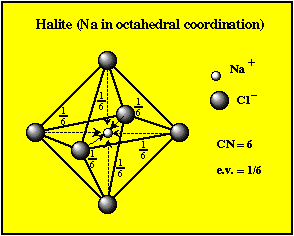
When all bonds are of equal strength then this is termed isodesmic.
In many cases the bond strengths are not all equal. If you have a small compact group comprising a highly charged cation and less strongly charged anions then their e.v.'s will be large.
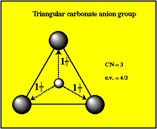
The 1 1/3 value is greater than one-half
the oxygen ion (1)
Therefore, a radical carbonate group exists (i.e., CO32-)
These functional groups typically bonds more weakly with another
cation (e.g., Calcite CaCO3).
When there is a disparity in the bond strengths (e.v.'s) then
these structures are said to be anisodesmic.
The most common example is the silicate tetrahedra, where e.v. = 1, which is half of the oxygen ion.
In the case the anion groups may bond together to form chains, sheets and boxwork polymers (e.g. quartz).
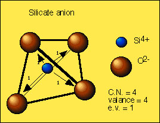
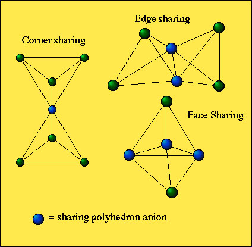http://www.gly.uga.edu/Schroeder/geol3010/3010lecture16.html
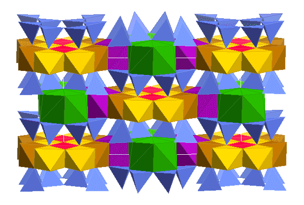
The amphibole structure above has one of the most complex site assemblages.
{kind=link}
{kind=link}
{kind=link}
{kind=link}
{kind=link}
{kind=link}
{kind=link}
{kind=link}
{kind=link}
{kind=link}
{kind=link}
{kind=link}
{kind=link}
{kind=link}
{kind=link}
{kind=link}